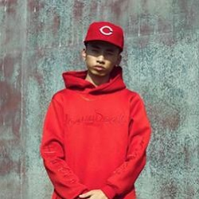

🔥加🔥大🔥力🔥度🔥
兄弟萌，🤙👌✌👊澳门皇家赌场今日上线辣，进来捡钱，搞快点！
🌸太君の中でどうぞ🌸
🔥送8000元现金红包👉冲就VANS了
🔥联系荷官发牌👉冲就VANS了
🙍🙎🙅🙆💁🙋🙇🤦🤷🙍🙎🙅🙆💁🙋🙇🤦🤷🙍🙎🙅🙆💁🙋🙇🤦🤷🙍🙎🙅🙆💁🙋🙇🤦🤷🙍🙎🙅🙆💁🙋🙇🤦🤷
对着荷官冲嗷铁汁，奥里给！！！
星级：🌸
圈名蔡徐坤（August），1998年8月2日出生于湖南省，中国内地男歌手、演员。
2012年4月，蔡徐坤因参加综艺节目《向上吧！少年》进入全国200强而进入娱乐圈；同年8月，参演个人首部偶像剧《童话二分之一》 。
2014年3月，参演个人首部电影《完美假妻168》。
2015年7月，蔡徐坤参加真人秀节目《星动亚洲》进入全国前十五强。
2016年10月，通过10人男子组合SWIN正式出道 。
2018年1月，参加爱奇艺打造的中国首档偶像男团竞演养成类真人秀《偶像练习生》，并于同年4月6日获得最高票数，以NINE PERCENT九人男团C位作为队长出道；同年8月，发行个人首张EP《1》。
国际影响力：新津地下说唱皇帝（代表作《文爱》，《抽象圣经——嚯嚯嚯》，成名作《BINGBIAN病变》，病变在当时传唱度极高，很多歌手都出了remix，尤其是Cubi的翻唱更被听众误认为是原版，这是十分可笑的，我们要尊重知识产权嗷），尼美舒利说唱厂牌理事人，双截棍殴打奶奶，激光笔照射，cxkNM$L❤（蔡徐坤用于不要在意谣言和重伤），孙笑川的亲弟弟（同母异父）
令注：因其国际影响力巨大，暂用其哥哥的身份隐藏自己
星级：🌸🌸🌸🌸🌸
圈名杨超越，1998年7月31日出生于江苏省盐城市，中国内地流行乐女歌手，女子演唱组合CH2、火箭少女101成员。
2017年，加入女子演唱组合CH2，从而正式出道，并签约了多家游戏平台，为高校电竞比赛做内容推广；同年，随CH2相继推出了《启航》、《听雪恋歌》等单曲。
2018年，参加腾讯视频女团青春成长节目《创造101》，最终获得第3名，并加入女子演唱组合火箭少女101；8月18日，随火箭少女101推出组合首张EP专辑《撞》。
个人代表作：《燃烧我的60e》（feat.火箭少女101），卫校风云1~3，蹦迪就完事了，和黄🐱在酒吧包间的3天2夜.avi，我在成都的乡下走一走.avi，MusicMountain游记.avi
国际影响力：因在其原创歌曲《燃烧我的60e》的副歌部分破音将歌曲注入了灵魂，成功冲击女团C位，并顺利解散火箭少女101，还通过伪装成🐉鸣傻白甜将自己下海经历洗白

星级：🌸🌸🌸🌸
圈名马思唯，中国内地男rapper，1993年1月29日出生于四川省，毕业于邯郸一中。
马思唯不仅在中国地下说唱界很有名气，他的说唱实力早已经得到了国际认可。他擅长old school，他的作品《flava in ya ear》曾入围《Underground Heat》榜单Top10。
根据网络消息（有待求证）：据传，当时间红花会与gai不和，说唱圈的人站队，不少人站队红花会，其中一首diss Gai的歌也被很多人转发，这首歌名为《该挨》，似乎就是马思唯所写。两个人之前就因为意见不合而有些矛盾。
2014年2月11日马思唯发行专辑《P.E.I Vol.2》。该专辑收录了：《冷板凳》、《成都rappers》、《追求》、《崂山道士》、《烂眼儿》、《都来耍》。
2015年2月17日发行单曲《No Flex Zone Remix》。
2015年7月12日发行专辑《PEI3》，该专辑收录了：《Na Na》、《No Flex Zone Remix》、《F**k You》、《War Ready》、《安逸不好耍》、《娘子》、《R$W》、《找不到》、《90》、《为啥》。
2015年9月12日发行单曲《要格冷嘛》。
2015年12月3日发行单曲《World Wide》。
2016年3月17日发行单曲《D.F.W.M.C》。
2016年4月4日发行单曲《Uber Everywhere》。
2017年9月11日发行单曲《Hong Kong》。
2017年12月25日发行单曲《REFRESH》。
2018年8月3日发行单曲《Can't be the one》。
国际影响力：DISS就完事了，莫让幽怨记心头，指点江山，混吃等死，形成永动
别名：维尼（我有丶不敢点）
星级：🌸🌸🌸
圈名吴亦凡（Kris），1990年11月6日出生于广东省广州市，华语影视男演员、流行乐歌手。
2007年吴亦凡加入了韩国SM娱乐公司，参加练习生培训。2012年作为EXO组合成员正式出道，担任EXO/EXO-M队长、主Rapper、门面。
2014年5月15日，吴亦凡正式向首尔中央地方法院请求判决与SM娱乐公司专属合同无效。之后吴亦凡回归中国发展，出演个人首部电影，担任徐静蕾执导的电影《有一个地方只有我们知道》男主角，凭此获得第3届伦敦国际华语电影节最佳新锐男演员奖。
2015年7月登上杂志《Vogue》。同年发行首张原创制作单曲《Bad Girl》。年底主演电影《老炮儿》上映，因饰演小爷谭小飞一角进一步受到广泛关注。
2016年1月博柏利160周年，登上博柏利秀场，同年担任博柏利华人全球代言人。7月主演电影《原来你还在这里》累计票房3.37亿创同年青春片票房纪录；8月主演电影《夏有乔木》上映，凭此获得日中电影节金鹤奖最佳男主角。11月公布首张英文单曲《JULY》。
2017年2月主演电影《西游伏妖篇》票房累计突破16亿，吴亦凡在片中饰演男一号唐三藏，同月受邀第59届格莱美颁奖典礼；6月，参加综艺节目《中国有嘻哈》；10月，与美国饶舌歌手Travis Scott合作单曲《Deserve》，上线两小时后登上美国iTunes总榜第1位。
2018年5月，参与词曲创作的新专辑首支单曲《Like That》上线当日在美国iTunes总榜和hip-hop/rap分榜双登顶，单曲更登上Billboard Hot 100 排名第73名，成为首位进入Billboard Hot100单曲榜的华人歌手。
国际影响力：Skr加入米国俚语，澳洲炮王，给你排luan
代表作：《面条》
星级：🌸🌸
圈名黄子韬，1993年5月2日出生于山东省青岛市，中国流行乐男歌手、演员、主持人。
2015年6月11日，黄子韬Z.TAO工作室正式成立；7月20日，黄子韬发行首张个人数字专辑《T.A.O》；8月23日，在北京举行首场个人Mini公益演唱会；12月5日，出席第九届音乐盛典咪咕汇并获得年度最受欢迎舞台表现奖。
2016年5月1日，黄子韬在南京举办“THE ROAD”演唱会；8月22日，发行首张实体专辑《The Road》；10月21日，加盟湖南卫视国防教育节目《真正男子汉第二季》；11月26日，黄子韬获百度娱乐年度人物奖。2017年12月25日，加盟优酷《这！就是街舞》。
国际影响力：抽象灵堂第6324代单传主持人，骂哭选手，被选手骂哭
代表作：各类假唱，行为艺术（参考《我不是💊神》)
🌸太君は今度お越しになることを歓迎します🌸